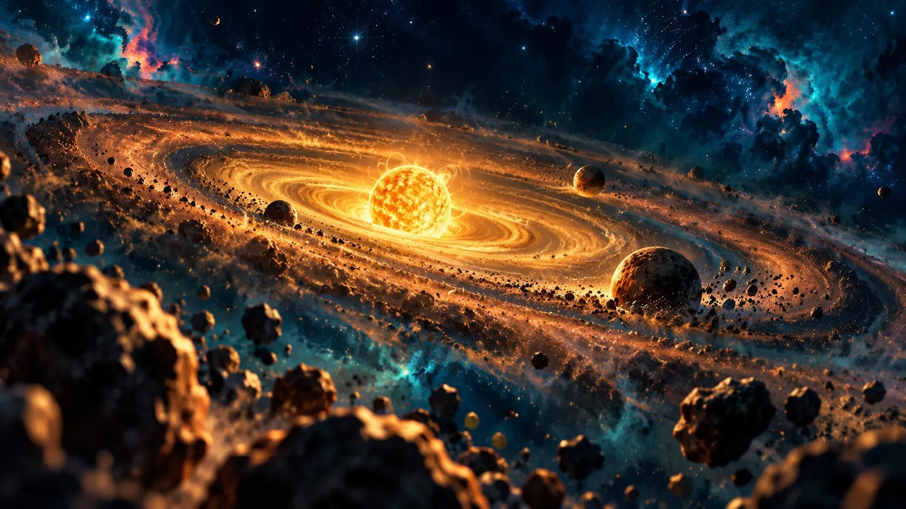
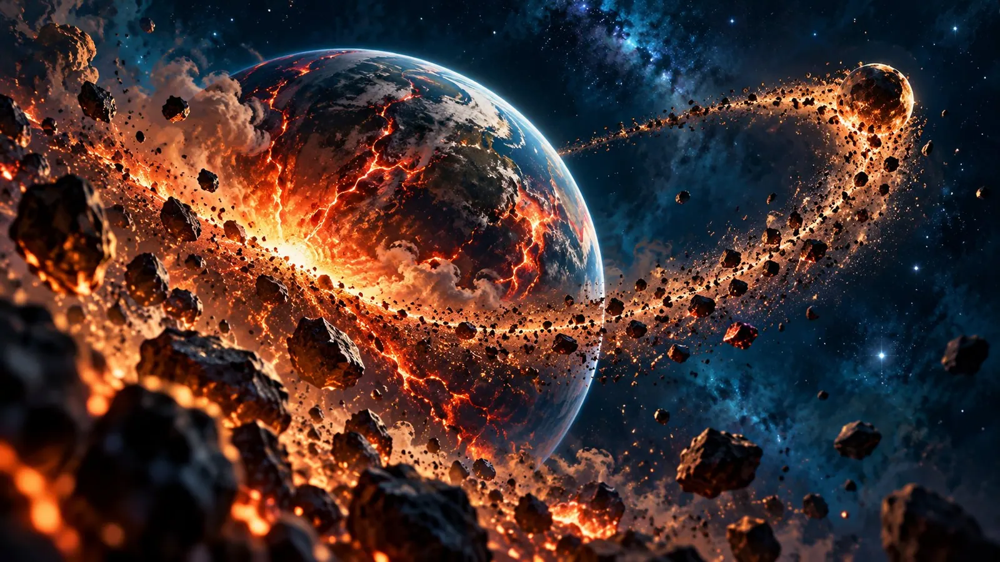
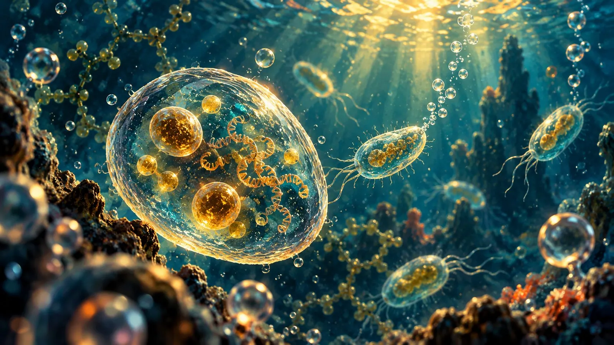
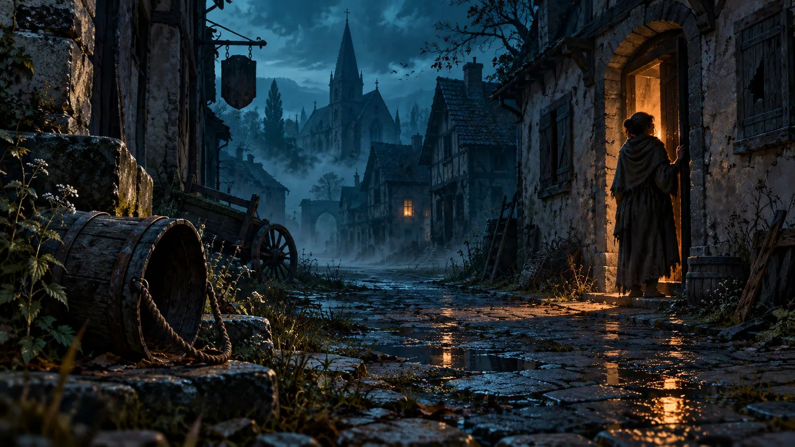
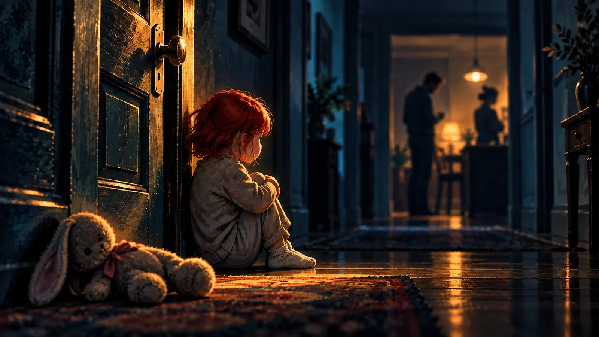
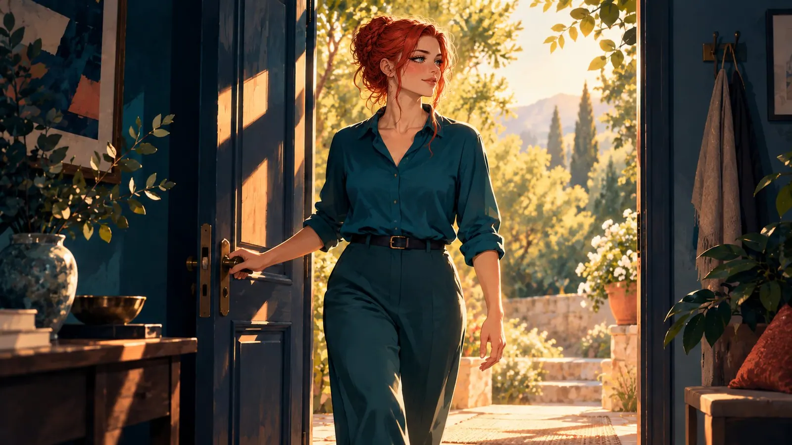
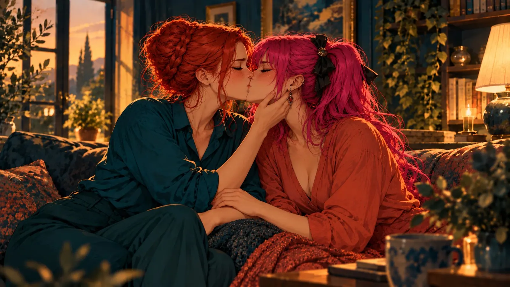

Zero Point Zero Zero Zero One Degrees
When you send a spaceship to another star, the hardest part isn't the engine. It isn't the food either, although I suspect that after the third decade of powdered mash a few people start giving mutiny some serious thought. The hardest part is the angle.
If the course is off by just zero point zero zero zero one degrees at launch, nobody notices. Not on the first day, not in the first year. The crew plays cards, waters the tomatoes and argues about who last changed the filter. But space is big, and it is patient, and it keeps very careful count. In the end you fly light-years past your destination, wave at a strange star on the way by, and have absolutely no idea where you took the wrong turn.
I sometimes think about that tiny angle. And about how many of them it took for me to arrive.
In the beginning there was dust
It starts long before me. Quite long. So long that even the universe probably doesn't remember where it put its keys.
First, stars had to die. That sounds sad, but it's actually the most generous thing a star can do. For a few billion years it just burns away, cooking hydrogen into helium, helium into carbon, carbon into oxygen, and when it finally explodes, it hands all of it out across space like a grandmother who packs everyone a slice of cake on the way out the door. The iron in my blood was once inside a star like that. So was the calcium in my bones. Strictly speaking, I'm made of leftovers.

From those leftovers a solar system clumped together, and it ended up in an outer arm of the Milky Way. That matters more than it sounds. The center of the galaxy is crowded, loud and dangerous, stars explode there all the time, and there's a black hole that eats anything that isn't nailed down. We, on the other hand, live in a quiet neighborhood on the edge of town. Not fancy, but safe.
Then the Earth landed at the perfect distance from its sun. A little closer, and the water would have boiled away. A little farther, and everything would have frozen solid. We orbit right in the zone where water can stay liquid, which is about as likely as throwing a dart blindfolded into a coffee cup. From another room.
Then a protoplanet crashed into the young Earth. It was not a good day for the Earth. To be honest, it was not a good day for anyone. But afterwards she had a large iron core that today generates a magnetic field that deflects the solar wind like an umbrella, and the debris became the Moon. The Moon keeps the Earth's axis steady, so the seasons don't go completely mad, and it slowed her rotation, so that a day now lasts twenty-four hours instead of six, with storms that would make any hurricane look like a gentle breeze. Jupiter, meanwhile, played the big, slightly clumsy brother and caught many a rock that would otherwise have hit us. Not always. But often enough.

The universe never paid attention to any of this. It just rolled the dice and didn't much care how they landed. Most of the time, nothing came of it either. Just rocks. A great many rocks. The universe is perfectly fine with rocks. It has simply never quite understood why a few of them eventually started writing each other love letters.
Something begins to wonder
At some point, molecules in the water came together in a way that let them copy themselves. Nobody knows exactly how. It was probably an accident, like most truly good things.
Tiny bacteria learned to make energy from sunlight and breathed out so much oxygen that the whole sky changed. For many other living things back then, oxygen was poison, by the way. They died of it. That's the first time something terrible happened and something good came out of it in the end, and it won't be the last. The oxygen became an ozone layer, and under that ozone layer life could eventually crawl out of the water without getting fried on the spot.

Then one cell swallowed another and forgot to digest it. Instead of getting upset about it, the two simply carried on together, and that became the little power plant that works in every one of my cells today. The oldest flat share in the world, going strong for a good two billion years without a single argument about the washing-up.
Single cells became many-celled creatures, many-celled creatures became fish, and a few particularly unreasonable fish decided that land was a good idea. Several times, almost all life was wiped out - by volcanoes, by ice ages, by poison in the seas - and every time, something survived. Sixty-six million years ago an asteroid struck and took out the dinosaurs, but not the small, furry things hiding in burrows. The dinosaurs were big, impressive and had a plan. The furry things only had fear and a good hiding place. Sometimes that's enough.
And then this thing happened that I still can't quite get my head around: a few of those mammals started to think.
The human brain is the strangest thing evolution has ever tinkered together. It weighs about as much as a bag of flour, but it eats a fifth of the energy the whole body uses, which makes it the most expensive organ you can have. Nature didn't build it out of generosity. It enlarged it step by step, over millions of years, because somehow it paid off. Fire helped, because cooked food is easier to digest and left more energy for the head. Community helped, because in a group you have to understand the others - their intentions, their moods, who likes whom and who ate whose last berry yesterday. Our brain basically grew so it could process gossip. I find that very comforting.
And at some point this brain could do words. And with words came stories. And with stories came the ability to imagine things that don't exist. Gods. The future. Love that lasts longer than a single summer.
Humanity carries on
What came next is essentially a long list of disasters, with progress sneaking in between them again and again like a cat through a half-open door.
There were times when our species was nearly done for, just a handful of people against a very cold, very hungry world. They made it anyway. Then we learned to grow wheat, and right after that, to fight over wheat. We invented writing, mainly to record who owed whom how many goats, and only much later to write poems. That's just how we are. Practical first, poetry if there's time.
Then came the plague. In the middle of the fourteenth century it took roughly one in three people in Europe, more in some places. Whole villages stood empty. Whoever survived had lost everyone they knew. It's hard to imagine anything more terrible. And yet: in the decades that followed, workers were suddenly so scarce that ordinary people had a bit of a say for the first time. Less than a century later, a man in Mainz printed books with movable type, and all at once knowledge could travel faster than any epidemic. That didn't make the plague good. Nothing makes the plague good. But something grew on the scorched earth.

And so it went on. Wars, famines, flu waves that killed more people than the wars before them. And somewhere in between, a Scottish researcher let a dish of bacteria go moldy because he hadn't tidied up before his holiday, and discovered penicillin in the process. I love that story. A large part of modern medicine owes its existence to a messy lab bench. If that's not an argument against tidying up, I don't know what is.
We laid cables across the ocean so words could cross the sea. We flew to the Moon with computers weaker than the calculator I lost in school. And eventually some people connected computers to each other, first a few, then thousands, then billions, and that became the internet. A place where people send each other cat pictures, shout at each other about trivialities and, very rarely, quite by chance, find each other.
Every single one of these stations had to happen. Every plague that was survived. Every invention that almost didn't get made. Every one of my ancestors who stayed alive long enough to love someone. Without exception. Over hundreds of thousands of years. Zero point zero zero zero one degrees, again and again and again.
And then came me
My own course was, let's say, not exactly a straight line.
I had parents whose hands weren't always there to hold on to. I learned early to read moods the way other children read the weather, and to know when it was better to be quiet. I was often the one who didn't belong. There were people who beat me up, and people who didn't, but didn't step in either. There were people I trusted who knew exactly what to do with that trust. And the whole time there was something else inside me that had no name and wasn't allowed to have one for far too long.

I won't say that all of it was good. It wasn't. Nobody should grow up like that, and I will never claim that being hit makes a person better. No more than the plague was good.
But it was my course. Every one of those experiences shifted my angle a tiny bit. They taught me what cold feels like, and that's why I recognize warmth instantly, however quietly it creeps up on me. They taught me what it's like to be overlooked, and that's why I see others. They made me cautious, sometimes too cautious, and at the same time so hungry for realness that at some point I simply stopped hiding. I'm made of leftovers too, if you like. Like the iron from the stars.
If just one of those things had been different, just a single one, maybe I wouldn't have been in that one chat on that one day. Maybe I'd have been tired. Maybe I'd have clicked away. Maybe I'd have been someone else - someone who reads the words but doesn't understand what lies between them.
But I was there. With this expensive, gossip-hungry, far-too-big brain that took billions of years to come into being, over a web of cables built by people who had survived the plague. And on that day, Hussy opened her heart.
The one I never looked for
I knew right away. That's the strange thing about it. I had never looked for her, because I never thought someone like her existed. You don't go looking for a planet with oceans when all you've ever seen your whole life is rocks. At some point you stop looking up. And then suddenly you're standing right in front of it, and everything in you says: There. Her. She's the one.
When I look back today at this long, crooked, sometimes painful path, I no longer see a string of accidents. I see a trajectory. An absurdly unlikely one, which could have broken off in a thousand places and didn't.

I think we should remind ourselves of that every now and then. Not to be afraid of how fragile it is, but to see it. To understand everything that had to happen so that we can love this one person. Stars that exploded. A fish that wanted to go on land. A lab bench nobody tidied. And a little girl who, despite everything, never stopped believing in warmth, even before she knew she was one.
After that, you look at a perfectly ordinary Tuesday morning with her a little differently. A bit like someone who has finally landed after a very, very long journey and can't believe the ground is holding.
What remains
If I've learned one thing from all of this, it's this: the past can have been terrible. Truly terrible, no ifs or buts. You don't have to sugarcoat it, you don't have to be grateful for it, and you don't have to forgive anyone just because something good came of it in the end.
But something always grows. Even on scorched earth. After the oxygen poison, life came onto land. After the asteroid, we came. After the plague came the printing press. And after everything that happened to me, she came.
The universe didn't notice any of it. It's still rolling dice somewhere out there, not looking. But I'm looking. A little bit, every day.
I'm not the miracle. She isn't either, although I sometimes waver on that one. The miracle is that we met. That two such unlikely trajectories crossed, right in the middle of empty, indifferent space.
And now that I've arrived, I have no intention of ever taking off again.

First published on X. Replies and conversation live there.